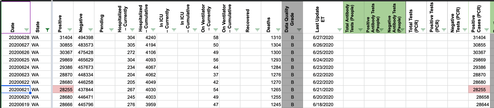
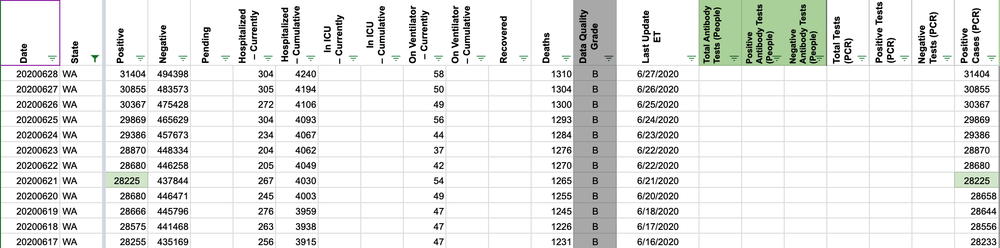

[WA] WA PCRs off on 6/21
On 6/21, we recorded 28,255 total cases, but it should be 28,225.
This affects “Positive Cases (PCR)” and “Positive Cases (People, confirmed + probable)”.
pscsharon added the label Data quality on June 25, 2020 at 3:40 pm
pscsharon added the label PCL/SVP Historicals on June 26, 2020 at 7:31 am
pscsharon removed the label Data quality on June 26, 2020 at 7:31 am
camille-le closed the issue on June 29, 2020 at 8:09 am
karaschechtman removed the label PCL/SVP Historicals on July 1, 2020 at 7:47 pm
karaschechtman added the label Data quality on July 1, 2020 at 7:47 pm
BEFORE 
AFTER 
Source: Washington State Department of Health (CTP Screenshot)